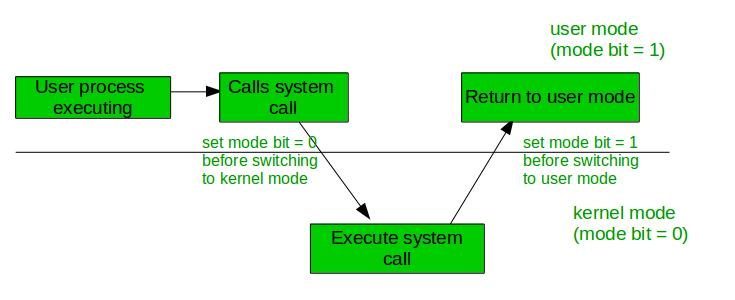

An error in one program can adversely effect many processes, it might modify data of another program, or also can effect the operating system. For example, if a process stuck in infinite loop then this infinite loop could effect correct operation of other processes. So to ensure the proper execution of the operating system there are two modes of operation:
User mode –
When the computer system run user application like creating a text document or using any application program, then the system is in user mode. When the user application requests for a service from the operating system or an interrupt occurs or system call, then there there will be a transition from user to kernel mode to fulfill the requests.
Note: To switch from kernel mode to user mode, mode bit should be 1.
Given below image describes what happen interrupt occurs:

Kernel Mode –
When system boots then hardware starts in kernel mode and when operating system is loaded then it start user application in user mode. To provide protection to the hardware, we have privileged instructions which execute only in kernel mode. If user attempt to run privileged instruction in user mode then it will treat instruction as illegal and traps to OS. Some of the privileged instructions are:
- Handling Interrupts
- To switch from user mode to kernel mode.
- Input Output management.
Note: To switch from user mode to kernel mode mode bit should be 0.
Read next – User Level thread Vs Kernel Level thread